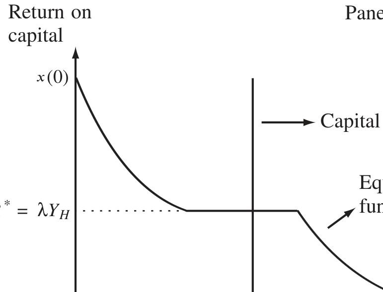
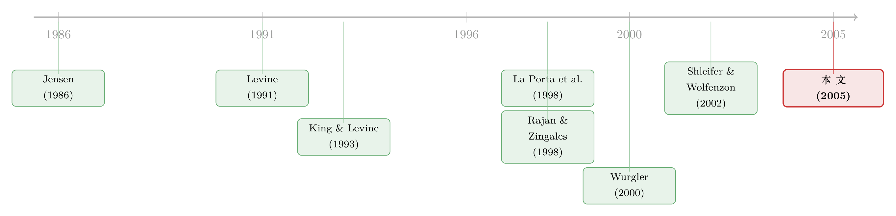

举债，竟是为了「逼」别人把好钱让出来
本文读的是 Almeida & Wolfenzon (2005, Journal of Financial Economics)：在投资者保护较差、现金流只能部分质押的经济里，企业更高的外部融资需求反而能改善整个经济的资本配置效率——因为它逼着那些「过得去」的中等项目被清算，把腾出来的资本让给真正的高产项目。一句反直觉的话：举债对单个公司可能是负担，对整个经济却可能是福音。
1 一个被我们说反了的故事
我们对「外部融资」几乎有一种本能的戒备。
借钱要还本付息，发股要稀释控制权；融资约束 (financing constraint) 卡着企业的投资，融资需求大的公司更容易在坏年景里被债主逼到墙角、被迫贱卖资产。直觉上，一个经济体如果企业普遍「缺钱、要外融」，听起来不像好事——它意味着自有资金不够、意味着脆弱、意味着 Diamond (1991) 笔下那种「到期了还不上、只能被清算」的风险。
但 Almeida 和 Wolfenzon 在这篇 2005 年的 JFE 里，偏偏要把这个故事讲反。
他们的核心命题是这样的：当资本配置本来就被糟糕的投资者保护 (investor protection) 卡住时，企业整体上更高的外部融资需求，反而会通过「多清算、把资本释放出来」来改善全社会的资本配置效率 (efficiency of capital allocation)。
注意这里有两个一旦说清楚就很关键的限定词。第一，这是一个一般均衡 (general equilibrium) 的故事——我们关心的不是某一家融资的公司过得好不好，而是融资这件事在整个经济里激起的涟漪。第二，外部融资带来的好处是一种社会收益，而不是私人收益：它甚至可能在被融资的那家公司层面引入了低效（过度清算），却让经济中别的公司受益。
这正是它跟 Jensen (1986) 那条著名的「自由现金流」逻辑分道扬镳的地方。Jensen 说债务能管住经理人乱花钱，好处落在发债公司自己的股东身上；而这里，债务的好处落在别人身上。（关于 Jensen 那条经典逻辑，可参见《现金为什么一定要「还」出去？——四十年后，重读 Jensen 的自由现金流》。）
要把这个反转讲透，得先搭出他们的模型。
2 模型设定：三类项目、三个日期
经济里有两类风险中性、不贴现未来的主体：测度为 1 的企业家（每人手里有一个项目）和一批没有项目机会的投资者。全经济只有一种商品——资本。
初始时刻 \(t_0\)，经济中的资本总量是 \(1+K\)（其中 \(K>1\)）。每个企业家自有 \(1-Z\) 单位（\(0\le Z<1\)），剩下的 \(K+Z\) 单位握在投资者手里。时间线分三段：
- \(t_0\)：企业家发行金融合约，向外部投资者募集 \(Z\) 单位资本，去支付项目的投资成本；
- \(t_1\)：项目的生产率信息到达，资本可以在项目之间重新配置 (reallocation)；
- \(t_2\)：现金流实现。
资本可以无损耗地储存，也可以投进两种在 \(t_2\) 才付钱的技术里。
第一种叫项目 (projects)，每个项目无穷小。\(t_0\) 投入 1 单位；到 \(t_1\)，项目可以被清算 (liquidation)（整整 1 单位资本被收回），也可以继续、甚至再追加资本。项目分三型——高、中、低生产率，概率 \(p_H,p_M,p_L\)，每单位投入分别产出
$$Y_H > Y_M > Y_L \ge 0,$$
但只对前两单位有效（\(t_0\) 投的那一单位，和 \(t_1\) 可能追加的那一单位），再多投就不产生现金流了。
第二种叫一般技术 (general technology)，\(t_1\) 时对所有人开放，单位回报 \(x(\omega)\)，\(\omega\) 是投进去的总资本。两条假设给整个故事定了调：
$$\text{Assumption 1:}\quad \frac{\partial[\omega x(\omega)]}{\partial \omega}\ge 0,\quad x'(\omega)\le 0,\quad x(1+K)>1;$$
$$\text{Assumption 2:}\quad Y_M > x(0).$$
合起来，技术的生产率排序是：高产项目 $>$ 中产项目 $>$ 一般技术 $>$ 低产项目。记住这个排序，下面的全部张力都来自它。
3 真正的摩擦：现金流只能押一半
如果这就是全部，资本会乖乖流向最高产的地方，没什么好讲的。让模型有了灵魂的，是一条来自投资者保护的摩擦——有限可质押性 (limited pledgeability)。
企业没法把项目产生的全部现金流都「押」给外部投资者。具体地说，对 \(t_2\) 期第二单位投资的回报，只有比例 \(\lambda\) 是可质押的。于是在 \(t_1\) 的再配置市场上，一个生产率为 \(s\)、选择继续的项目 \(j\)，它能向新投资者承诺的单位回报上限是：
这条约束的灵感，作者直接接到 Shleifer & Wolfenzon (2002)：内部人本可以侵占外部投资者，但侵占有成本，保护越好（侵占越贵）、可质押的现金流就越多，\(\lambda\) 就越高。它也能从 Hart & Moore (1994) 的人力资本不可让渡、或 Holmstrom & Tirole (1997) 的道德风险里推出来。
还有一条关键的不对称假设：清算所得是完全可质押的。直觉很自然——清算时把资产卖掉收回的钱，比项目未来现金流更容易被外部核实；而且企业家的人力资本对「清算」这件事没用，所以他没法靠「撂挑子」要挟分一杯羹。这条不对称（继续只能押 \(\lambda Y_s\)、清算却能押满）后面是发动机。
4 把 \(t_1\) 市场画成一条供给与需求曲线
模型倒着解。\(t_2\) 没有决策，从 \(t_1\) 的再配置市场入手。
供给侧。 能被重新配置的资本一共是 \(K+T\)：\(K\) 是从 \(t_0\) 储存下来的，\(T\) 是清算项目释放出来的，
$$T=\int_{j\notin C} \mathrm{d}j,$$
\(C\) 是继续经营的项目集合。低产项目继续下去不产生现金，所以总会被清算，于是清算所得至少有 \(p_L\)。供给曲线是一条竖线。
需求侧。 高产、中产项目和一般技术都来抢这笔资本。受限于可质押性，高（中）产项目最多开出 \(\lambda Y_H\)（\(\lambda Y_M\)）每单位，一般技术开出 \(x(\omega)\)。模型假设在 \(\omega\) 很小时 \(x(0)>\lambda Y_H\)——也就是说，一般技术在一开始反而比好项目更能出价。于是资本先涌向一般技术，随着投得越多、\(x(\omega)\) 越低；当它跌到 \(\lambda Y_H\)，高产项目才挤得进来，这就是需求曲线那段平台。
均衡由一个临界值 \(R^*\) 刻画（Lemma 1）：
$$r_j=\begin{cases}0 & \text{if } P_j < R^*,\\[2pt] 1 & \text{if } P_j>R^* \text{ or } P_j=R^*,\ \bar{P}_j>R^*,\\[2pt] r^* & \text{if } P_j=\bar{P}_j=R^*,\end{cases}$$
一般技术拿走 \(\omega^*=x^{-1}(R^*)\)，再由市场出清
$$\omega+\int_{j\in C} r_j\,\mathrm{d}j = K+T$$
把 \(R^*\) 钉死。出价严格高于 \(R^*\) 的拿到资本，低于的拿不到，等于的无差异。
下面这张图，是整篇论文的心脏。

Figure 2: Equilibrium in the date-t reallocation market. The vertical line represents the total capital
Panel A：供给只有 \(K+p_L\)（只有低产项目被清算）。 均衡利率是
$$R^* = x(K+p_L).$$
接着，两件坏事同时发生。其一，由 Assumption 1(c) 一带的设定，\(x(K+p_L)>\lambda Y_H\)——市场利率高过高产项目能出的最高价，于是高产项目一分钱也抢不到。其二，对中产项目算一笔账：继续能拿 \(Y_M\)，清算后把那 1 单位拿到市场上再投只能拿 \(R^*=x(K+p_L)\)。而由 Assumption 2，\(x(K+p_L)\le x(0)
于是有限可质押性从两头扭曲了配置：高产项目吸不到该给它的资本；中产项目又不肯主动把资本让出来。社会上明明该做的事——清算一个中产项目（值 \(Y_M\)）、把那单位资本送给高产项目（值 \(Y_H\)），凭空多出 \(Y_H-Y_M>0\) 的产出——就是不会自发发生。因为高产项目只能可信地出价 \(\lambda Y_H\)，它竞不过市场利率，抢不走中产手里的资本。
那么，怎么才能逼中产项目松手？
5 反转：外部融资就是那只「逼着松手」的手
这正是 \(t_0\) 期外部融资的角色。
回想那条不对称：继续只能质押 \(\lambda Y_s\)，清算却能质押满。所以当初始融资需求 \(Z\) 足够大时，企业要还得起 \(t_0\) 期的投资者，唯一的办法就是在 \(t_1\) 承诺一定程度的清算——只有清算所得才押得动那么多钱。
接着，一个自然的问题是：要清算，先清算谁？答案藏在 \(Y_H>Y_M\) 里。事前来看，承诺清算一个中产项目，比承诺清算一个高产项目「更便宜」——清算高产项目丢掉的剩余太多。于是当融资倒逼清算时，最优合约会先让中产项目去死。
这一步是全篇的枢纽。中产项目被清算 → 释放出的资本把供给曲线从 \(K+p_L\) 往右推到 \(K+T\) → 这就是图 2 的 Panel B。供给上移，市场利率被压低，一直压到
$$R^* = \lambda Y_H,$$
此时高产项目终于挤进了平台、吸到了资本。从中产项目流出来的钱，有一部分找到了高产项目，整个经济的总产出因此变高。
于是反转完成：对那家被融资、被迫过度清算的公司来说，这可能是次优的；但它释放的资本喂饱了别处的高产项目，是一种社会收益。这就是开头那句话的全部含义。
这里有个不可忽视的前提：作者强调，结论成立需要 \(\lambda 不太低**。若可质押性太差，即便清算释放出更多资本、把利率压下来，高产项目能出的 \)\lambda Y_H$ 仍然低得抢不到钱，那笔释放出的资本只会流回一般技术，配置不会改善。换句话说，「外部融资改善配置」是投资者保护中等**时才点亮的机制——太好了用不着它，太差了它也救不了。
值得点一句：这个框架要求资本能在不同生产率的、正在运行的项目之间重新配置，而这恰恰是 Shleifer & Wolfenzon (2002) 同样用了有限可质押性、却给不出本文结论的原因——他们没有这条「跨项目再配置」的渠道。
6 数据：把「外融依赖」从行业搬到国家
理论给出一个干净的可检验命题：控制住投资者保护的水平之后，一国企业整体的外部融资需求，应当对资本配置效率有独立的正向作用。
怎么度量「一国的外部融资需求」？作者用了一招拼装：
- 拿 Rajan & Zingales (1998) 的行业级外部融资依赖度 (external finance dependence)——一个行业在多大程度上靠外融成长，这被认为是行业的技术属性、跨国可比；
- 再用每个国家各行业在制造业总产出中的份额（即一国的产业结构）做权重，加权出一个国家级的外部融资需求指数。
被解释变量是 Wurgler (2000) 的资本配置效率度量：一国内部，行业投资对行业增加值的弹性——增加值涨的行业投得多、跌的行业投得少，弹性越高，说明资本越会往「该去的地方」流。
跨国回归的结果与理论一致：外部融资需求与资本配置效率正相关，而且在控制了经济发展、金融发展、以及投资者保护等变量之后依然成立。更妙的是，这个相关主要由弹性的「年度内」(within-year) 成分驱动——也就是同一年里资本在不同行业间的腾挪，这恰恰最贴近模型说的「再配置」。最后，作者用 Easterly & Levine (2003) 的一国商品禀赋（地理、气候这类外生于金融的东西）作工具变量 (instrumental variable, IV) 给外融指数做了内生性处理——论点是禀赋外生地决定了产业结构、进而决定了外融需求——结论依旧显著。
这是一篇「理论为主、实证为辅」的论文：实证部分是对模型核心比较静态的一次跨国佐证，而非精细的因果识别工程。读它时，重心该放在那条供需曲线和「清算谁」的逻辑上。
7 文献脉络
把这条线索捋直，能看清这篇论文站在哪。
最早的一支是金融与增长：King & Levine (1993a)、Levine & Zervos (1998)、Rajan & Zingales (1998) 反复确认了金融体系影响经济增长。紧接着一个自然的追问是——金融通过什么影响增长？La Porta et al. (1997, 1998) 给出一个有力的答案：投资者保护才是金融体系质量的主轴。Wurgler (2000) 则把镜头对准了一个具体的渠道——资本配置效率，并发现金融发展和投资者保护与之正相关。
另一支是有限摩擦下的一般均衡配置模型：Levine (1991)、Bencivenga et al. (1995) 都论证了金融摩擦会降低配置效率，但他们盯的是股权交易的交易成本。本文与 Shleifer & Wolfenzon (2002) 一同把摩擦换成了有限可质押性——这才是关键，因为可质押性制造了内部人与外部人之间的利益冲突（内部人想续、外部人想清算），而交易成本对所有投资者一视同仁，催生不出这种冲突，也就给不出「外部融资改善配置」的预言。

本文的落点，就是在这条「投资者保护 → 配置效率」的主干上，添了一个被忽略的自变量：外部融资需求，并指出它在中等保护水平下扮演的、出人意料的正面角色。（这条「资本错配」的线索，国内读者还可以对照《钱配错了地方，就成了「全要素生产率」的缺口》与《市场太「集中」，资本就会配错地方》一起看。）
8 评论与延伸（Q&A + 研究方向）
(a) 几个可能的疑问
Q：这跟 Jensen (1986) 的「债务约束经理人」到底差在哪？
差在三点。其一，本文是一般均衡，关心的是融资对整个经济的外溢，而非单个公司；其二，本文的好处是社会收益——增量外融不利于受融公司本身（清算概率升高），却利于经济中其他高产公司；其三，Jensen 的逻辑主要针对股权分散、经理人可能投负 NPV 项目的公司，而本文里即便是 100% 企业家自有的公司，外部融资也能产生社会收益。
Q：「过度清算」明明是低效，凭什么说它好？
关键在「对谁」。对被清算的那家公司，继续经营本可拿 \(Y_M\)，清算是私人意义上的次优。但在均衡里，它腾出的资本流向了被卡住的高产项目（\(Y_H>Y_M\)），社会总产出反而上升。低效是私人的，收益是社会的——这正是一般均衡视角的价值。
Q：为什么先清算中产项目，而不是高产或低产？
低产项目本来就总被清算（继续无现金流）。在高产与中产之间，事前承诺清算高产项目要丢掉的剩余更大、成本更高，所以当融资倒逼清算时，最优合约挑「更便宜」的中产项目先下手。
Q：清算所得「完全可质押」这条假设是不是太巧了？
它是发动机，但作者给了站得住的理由：清算变现的钱比未来现金流更容易被外部核实；且企业家的人力资本对清算这件事没用，他无法靠要挟分成。继续经营才给内部人留了侵占空间，所以继续只押得动 \(\lambda\)、清算押得满——这条不对称是结论的来源，去掉它机制就垮了。
Q：结论会不会对投资者保护的高低很敏感？
是的，而且作者很诚实地指出了。只有当 \(\lambda\) 不太低时，被释放的资本才追得到高产项目；\(\lambda\) 太低时高产项目出价 \(\lambda Y_H\) 仍然吸不到钱，机制熄火。所以这是一个中等保护才点亮的故事，不是普适灵药。
Q：实证里那个国家级外融指数，可信吗？
它是「行业外融依赖度 × 行业产出份额」拼出来的，好处是行业依赖度被当作可跨国比较的技术属性、相对外生于一国金融。但它毕竟是间接代理，且用产出份额加权本身可能与发展水平相关——所以作者才补了用商品禀赋（Easterly-Levine）做 IV 这一步。把它当作对模型比较静态的佐证、而非铁板钉钉的因果，更稳妥。
(b) 几个可能的研究问题与提案
-
外部融资需求与公司债市场流动性的「再配置」类比。 【经济故事】本文讲的是实物资本在项目间的再配置；类似地，信用市场里，发行人整体的再融资需求是否会通过「逼迫低质量发行人退出/被接管」来改善二级市场的资本流向？ 【可行性】中。可用 TRACE + Mergent FISD 构造行业/发行人层面的再融资到期墙，识别上靠到期结构的准外生变动；难点是把「配置效率」在债市里定义清楚。
-
外资持有人作为「可质押性」的外生冲击。 【经济故事】外资进入往往伴随更强的治理与披露要求，相当于外生地抬高了 \(\lambda\)。按本文逻辑，在 \(\lambda\) 中等的国家，外资进入应当放大「外融—配置效率」的正向关系。 【可行性】中。可借市场准入/可投资度改革（如 MSCI 纳入）做 DiD，配合 Wurgler 式弹性度量；识别担忧是改革与其他金融自由化同时发生。
-
把 \(\lambda\) 直接量出来，重做这条比较静态。 【经济故事】本文的关键非线性（\(\lambda\) 太低则机制熄火）从未被直接检验。若能在公司层面构造可质押性代理（如抵押品比例、应计可验证性），就能检验「外融改善配置」是否真的只在中等 \(\lambda\) 区间成立。 【可行性】中偏低。可质押性的可信代理很难找，容易与融资约束本身混淆，需谨慎设计。
-
衰退期的「被迫清算」与配置效率。 【经济故事】衰退抬高再融资压力，按本文逻辑应当加速低/中产项目的清算与资本再配置。这与「衰退中结构变革加速」的文献能否对得上？ 【可行性】高。行业级投资—增加值弹性的年度面板现成，可比较衰退年与平常年的 within-year 成分。
9 我的判断
这篇论文最漂亮的地方，是把一个直觉上的「坏事」（企业要外融）在一般均衡里翻成了「好事」，而且翻得有机理、有边界——它清楚地告诉你这个机制在 \(\lambda\) 太低或太高时都不成立。那条「继续只押 \(\lambda Y_s\)、清算押满」的不对称，是整篇文章四两拨千斤的支点：正是它制造了内部人与外部人之间「续还是清」的冲突，也正是这个冲突，让别的金融摩擦（如交易成本）模型给不出同样的预言。这是一个理论贡献边界划得很清的范例。
对识别的担忧，主要在实证那半。国家级外融指数是间接代理，被解释变量 Wurgler 弹性也只是配置效率的一个侧影；商品禀赋作 IV 缓解了内生性，但排他性约束（禀赋只通过产业结构、不通过别的渠道影响配置效率）终归是个需要信仰的论断。说到底，这是一篇理论为体、实证为证的论文，实证强度不必苛求。
后续我最想看到的，是把那条非线性（中等 \(\lambda\) 才点亮）拿到微观数据上去做一次干净的检验——比如用一次外生抬高可质押性的治理冲击，看「外融—配置」关系是否真的呈倒 U 或阈值形态。如果它成立，这篇二十年前的理论会获得它一直缺的那块经验拼图。
参考文献
- Almeida, H., & Wolfenzon, D. (2005). The effect of external finance on the equilibrium allocation of capital. Journal of Financial Economics 75(1), 133–164.
- Bencivenga, V., Smith, B., & Starr, R. (1995). Transaction costs, technological choice, and endogenous growth. Journal of Economic Theory 67, 153–177.
- Diamond, D. (1991). Debt maturity structure and liquidity risk. Quarterly Journal of Economics 106, 709–737.
- Easterly, W., & Levine, R. (2003). Tropics, germs, and crops: how endowments influence economic development. Journal of Monetary Economics 50, 3–39.
- Hart, O., & Moore, J. (1994). A theory of debt based on the inalienability of human capital. Quarterly Journal of Economics 109, 841–879.
- Holmstrom, B., & Tirole, J. (1997). Financial intermediation, loanable funds and the real sector. Quarterly Journal of Economics 112, 663–691.
- Jensen, M. (1986). Agency costs of free cash flow, corporate finance, and takeovers. American Economic Review 76, 323–329.
- King, R., & Levine, R. (1993a). Finance and growth: Schumpeter might be right. Quarterly Journal of Economics 108, 639–671.
- La Porta, R., Lopez-De-Silanes, F., Shleifer, A., & Vishny, R. (1998). Law and finance. Journal of Political Economy 106, 1113–1155.
- Levine, R. (1991). Stock markets, growth and tax policy. Journal of Finance 46, 1445–1465.
- Rajan, R., & Zingales, L. (1998). Financial dependence and growth. American Economic Review 88, 559–573.
- Shleifer, A., & Wolfenzon, D. (2002). Investor protection and equity markets. Journal of Financial Economics 66, 3–27.
- Wurgler, J. (2000). Financial markets and the allocation of capital. Journal of Financial Economics 58, 187–214.